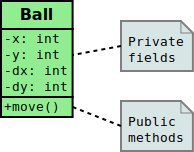
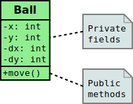

data Person = Person { firstName :: String
, lastName :: String
, age :: Int
} deriving (Eq, Show, Read)
Prelude> let mikeD = Person {firstName = "Michael",
lastName = "Diamond", age = 43}
Prelude> "mikeD is: " ++ show mikeD
"mikeD is: Person {firstName = \"Michael\",
lastName = \"Diamond\", age = 43}"
Prelude> read "Person {firstName =\"Michael\",
lastName =\"Diamond\", age = 43}" :: Person
Person {firstName = "Michael", lastName = "Diamond", age = 43}
Prelude> read "Person {firstName =\"Michael\",
lastName =\"Diamond\", age = 43}" == mikeD
True
 
